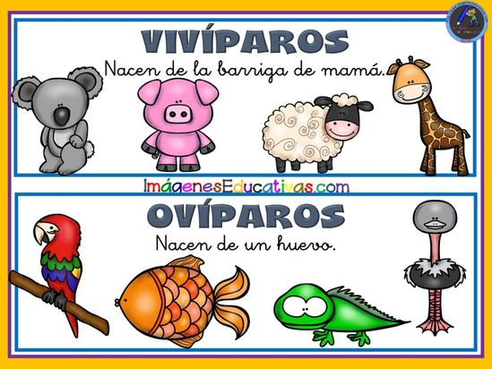
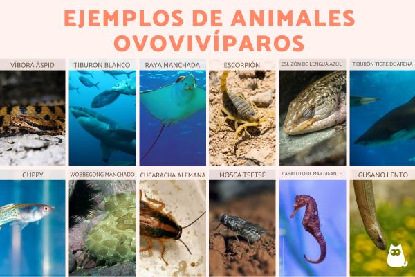

Clasificación segun Reproducción
Clasificación de los animales según su reproducción
La reproducción clasifica cómo y dónde ocurre el desarrollo embrionario, y existen tres tipos.
Animales ovíparos
Estos animales provienen de un huevo que provee los nutrientes necesarios. Su fecundación puede ser interna o externa. Algunos grupos taxonómicos que ponen huevos son los peces, reptiles, anfibio, insectos, aves, e incluso mamíferos de la clase Monotremata, que incluye a los equidnas y ornitorrincos.

Animales vivíparos
La siguiente clasificación de los animales se basa en todos aquellos que se desarrollan dentro de la madre y precedido de una fecundación interna. En el útero materno se provee el alimento, espacio y tiempo necesario para que el produzco nazca.
Los Marsipules son un caso excepcional, pues los fetos son expulsados aún sin estar desarrollados, y son culminados dentro de la bolsa marsupial. Este es el caso de los canguros.
Animales ovovivíparos
Este tipo de reproducción es una mezcla de los anteriores. Aquí los animales ponen huevos, pero son retenidos dentro de la hembra hasta que estén listos. Solamente son retenidos pero no alimentados como la viviparidad verdadera.
No ocurre en todos los grupos, pero se presenta en especies de tiburones y reptiles, principalmente en serpientes y algunos invertebrados.
